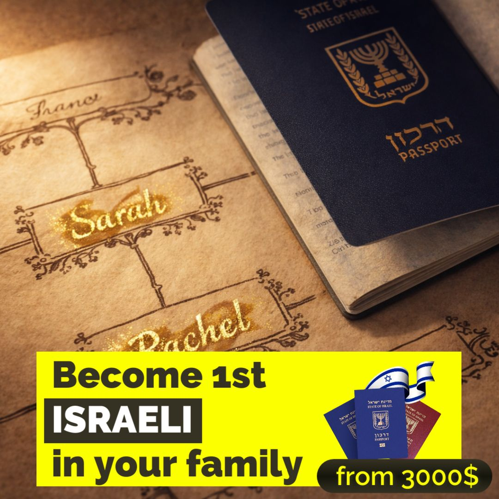
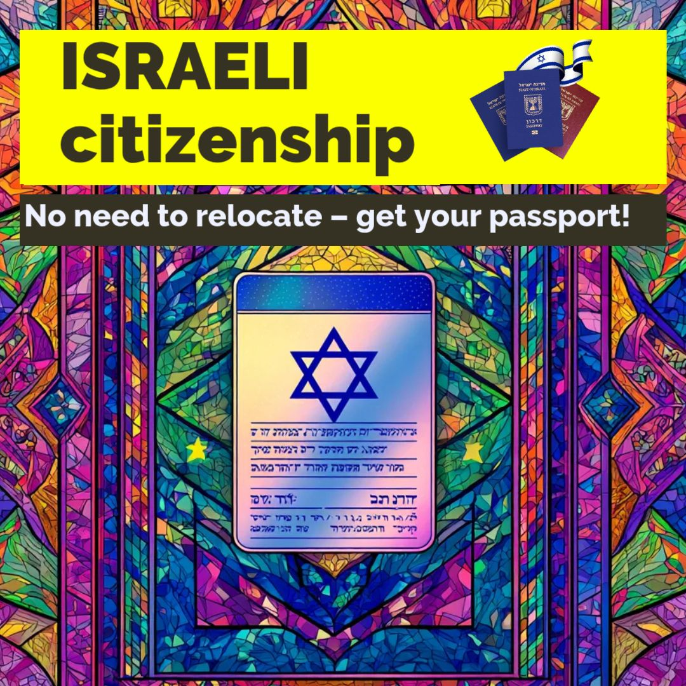
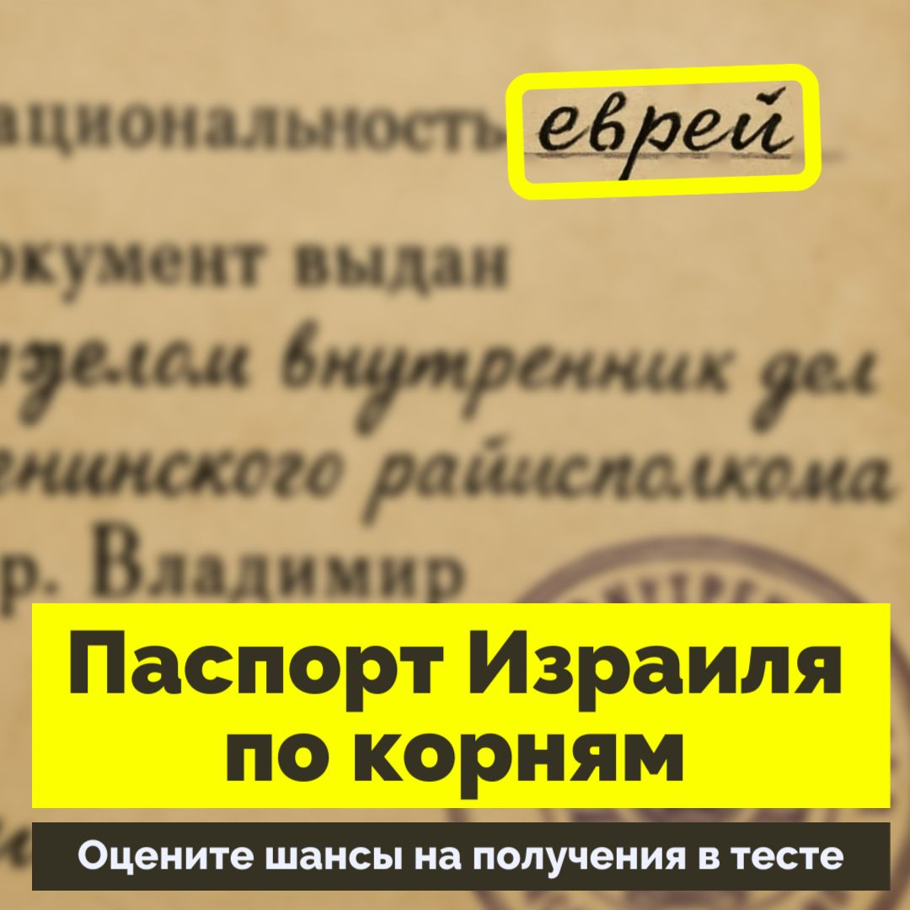

Кейс: 25 700+ лидов на гражданство Израиля
Как мы управляли аукционом Facebook через ненависть в комментариях

Ситуация на старте
Продукт: Услуги по получению израильского паспорта (репатриация) от одного из крупнейших международных агентств.
Специфика рынка: Проект строился вокруг двух совершенно разных, изолированных направлений. Первое — англоязычные евреи, давно мигрировавшие в США. Второе — русскоязычные экспаты, рассеянные по всему миру (Европа, Азия, СНГ).
Контекст на старте: Запуск канала Meta Ads с нуля для системного масштабирования потока заявок на зарубежных рынках.
Техническая база: Конвертеры — квизы (Quiz) на посадочных страницах и внутренние лид-формы (Lead Forms) Facebook.
🎯 Задачи проекта
-
1Максимизация объема заявок. Главный фокус — на количестве входящих лидов из разных ГЕО.
-
2Отказ от глубокой оптимизации аукциона. Оптимизация на качество лида (Purchase / Qualified Lead) была исключена из-за слишком длительного цикла квалификации и продаж в юридической нише.
🚧 Сложности проекта
• США: Фейковые лиды и поиск ценности. Американское гражданство — одно из сильнейших в мире. Очевидных причин получать паспорт Израиля у жителей США мало. Кроме того, кампании собирали шквал «мусорных» лидов: антисемиты оставляли заявки, чтобы высказать ненависть, а сочувствующие — чтобы просто сказать «спасибо». Вычленить из этой массы реальных клиентов было крайне сложно.
• RU-мир: Радикальная неоднородность. Русскоязычную аудиторию нельзя было заливать одной кампанией. Экспаты на Бали или в Таиланде, давние эмигранты в Германии и жители бывших стран СНГ — это совершенно разные паттерны потребления, требующие разных подходов. А ряд ГЕО генерировал столько нецелевого мусора, что требовал особых воронок-фильтров.
• Модерация и банкинг. Высокий уровень политизированности ниши приводил к регулярным блокировкам кабинетов. Ситуацию усложнял израильский банкинг (ручное подтверждение транзакций, шаббат), требующий жесткого контроля балансов во избежание остановок открута.
🛠 Действия и стратегия
Направление США: Диаспоры и смыслы
Мы разделили кампании: отдельно таргетировались на города с сильнейшей еврейской диаспорой (например, Нью-Йорк) и отдельно — на широкую аудиторию по всей стране. Чтобы донести ценность израильского паспорта для американца, тестировались десятки нестандартных рекламных углов: от «возвращения на историческую родину» до «паломничества».
Направление RU-мир: Жесткая сегментация
Был реализован индивидуальный подход к каждой географии. Для релокантов в Южной Азии использовались одни посылы, для жителей Прибалтики и Европы — другие. Для стран Кавказа и Центральной Азии (Азербайджан, Казахстан и др.) выстраивались дополнительные фильтрующие воронки или эти регионы полностью исключались, чтобы отсечь массивы нецелевого трафика.
Алгоритмы Meta и сила «хейта»
- Нейро-продакшен: Был совершен переход от ручного создания креативов к массовой генерации с помощью ИИ, что позволило непрерывно тестировать новые смыслы для разных сегментов.
- Взлом аукциона через негатив: Специфика ниши принесла более 15 000 комментариев, большинство из которых состояло из проклятий и оскорблений. Алгоритм автоматических ставок (Lowest Cost) считывал этот шквал реакций как «сверх-вовлеченность», что закономерно приводило к обрушению аукционной стоимости показа (CPM) и радикальному удешевлению лида.



📊 Результаты в цифрах
Итоговые метрики по всем направлениям
Русскоязычный мир
США (Англоязычное)
💡 Итоговое резюме
Привлечение более 25 000 заявок со средним CPL $5.33 в сложной юридической нише доказало: иногда нужен полный отказ от микроменеджмента ставок в пользу широкой оптимизации алгоритмов.
Негативный социальный отклик (массовый хейт в комментариях) можно использовать как мощный рычаг для снижения CPM. Однако такая стратегия требует стальных нервов, жестко выстроенной системы работы с платежами и непрерывной замены блокируемых рекламных кабинетов.
Как это работает технически?
В этом проекте я использовал алгоритм Lattice. Подробности в лонгриде.
Читать про метод